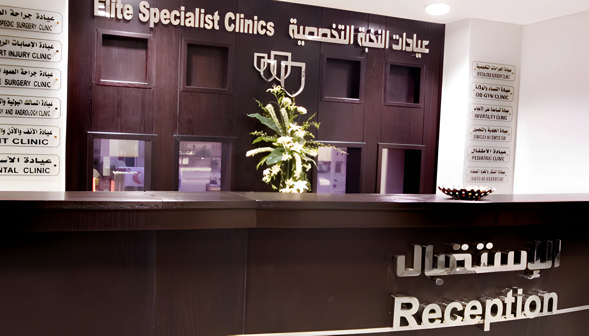
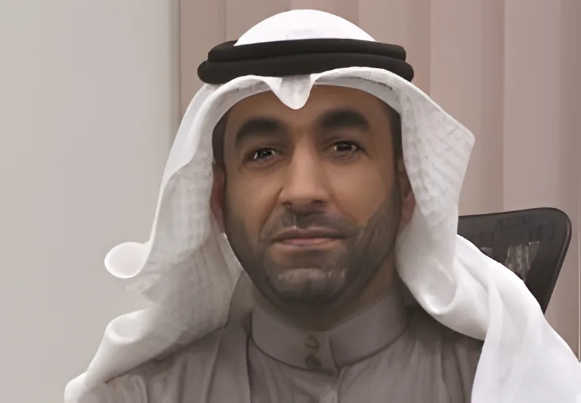
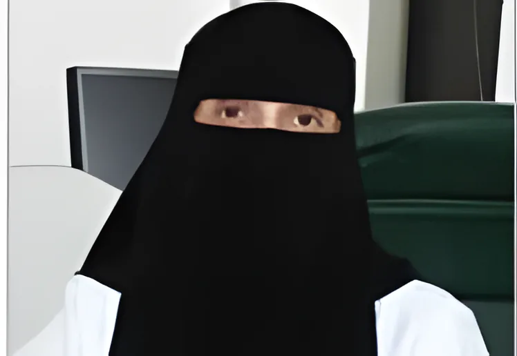
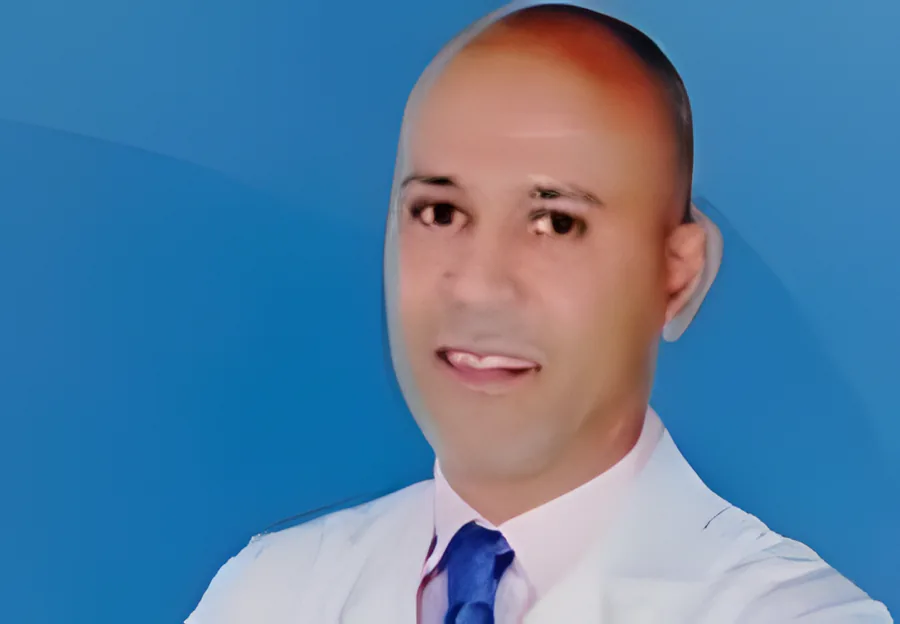
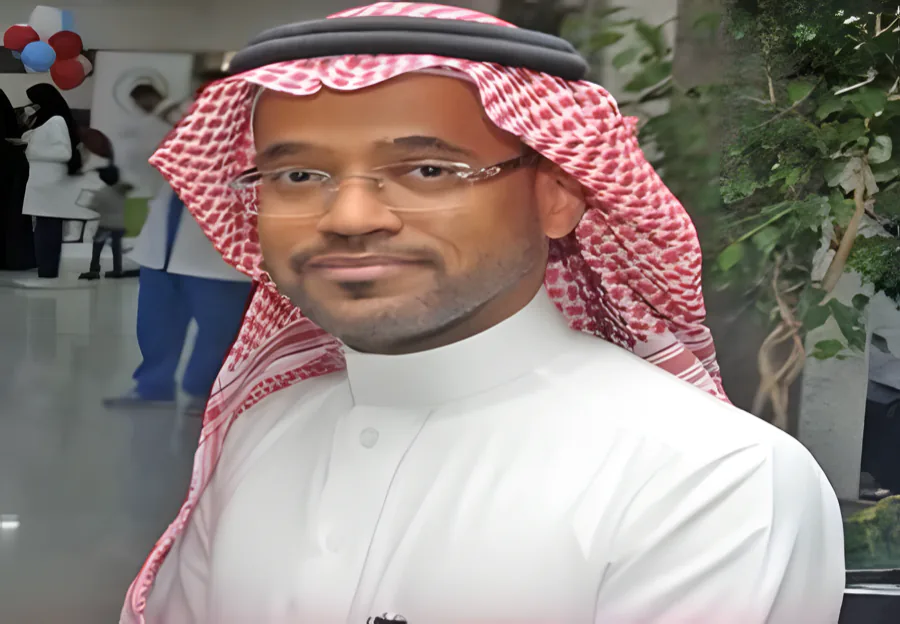
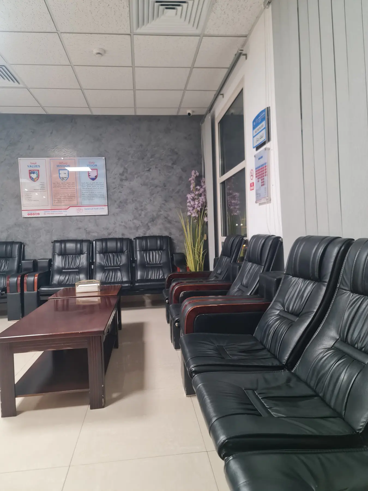
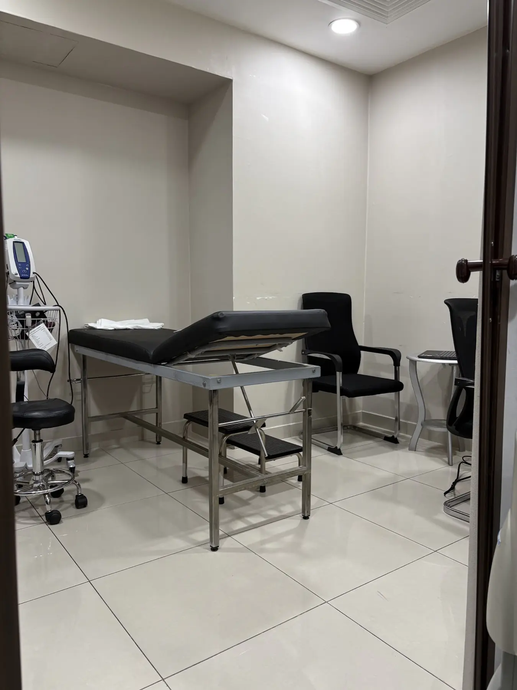
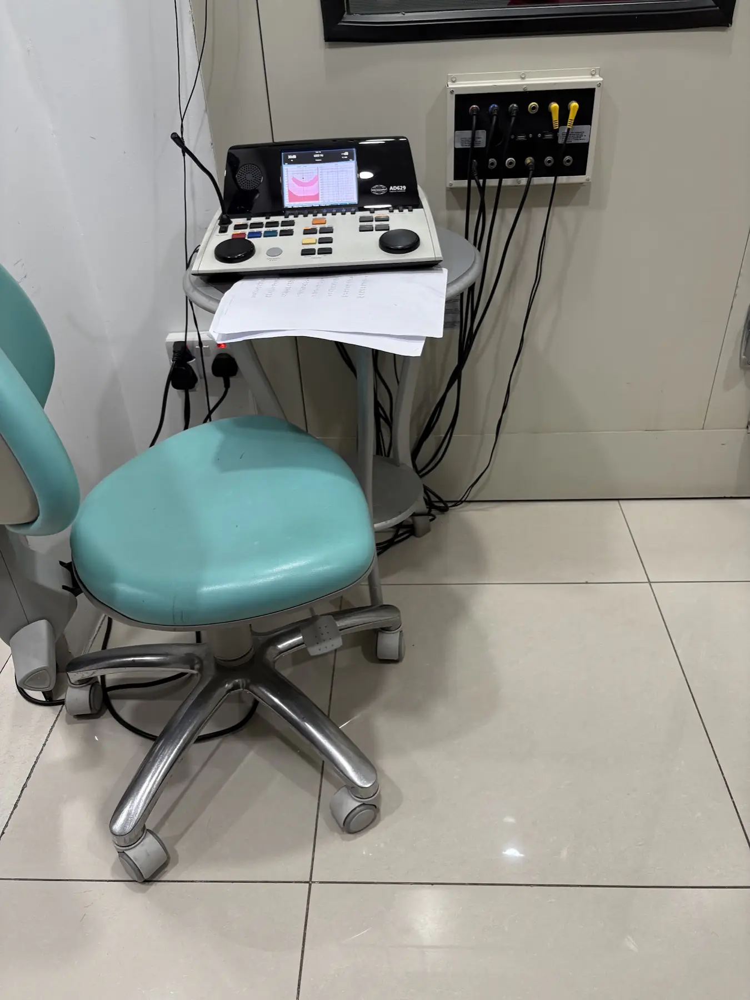
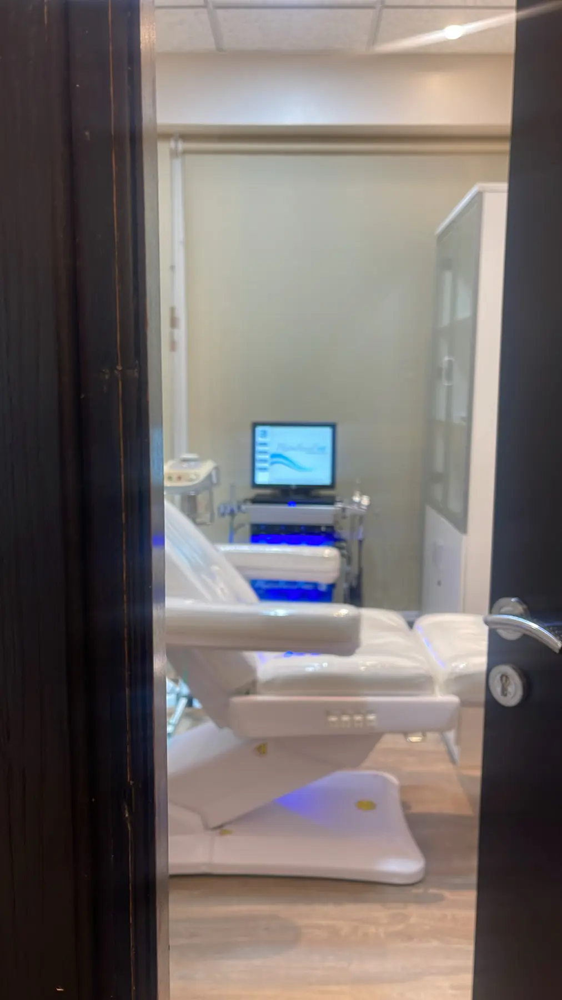
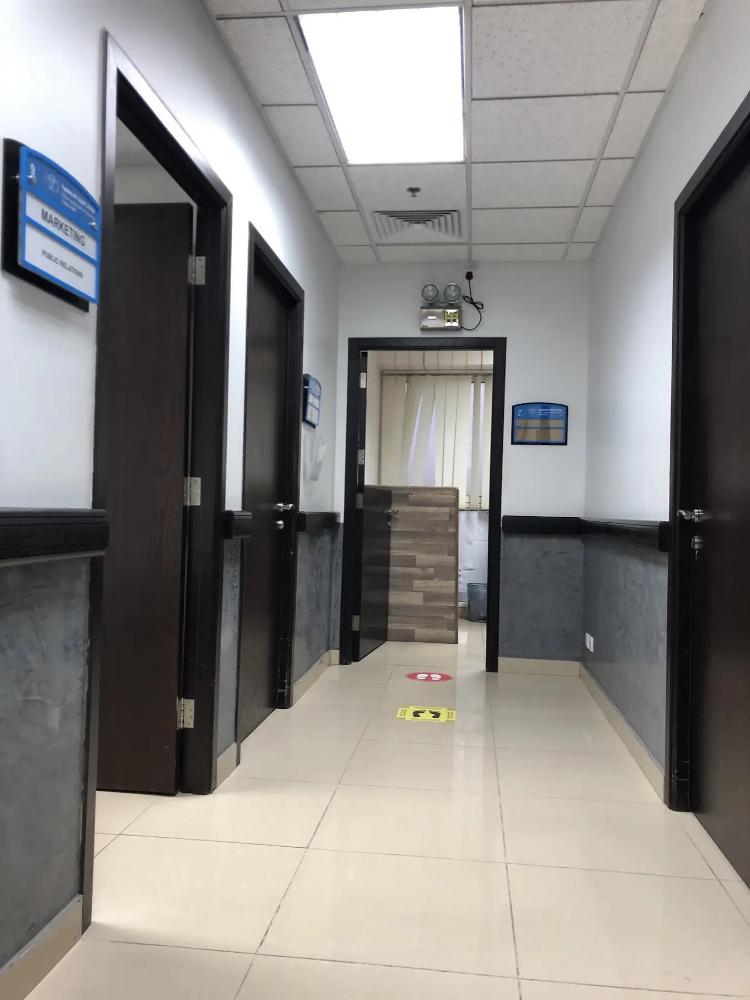

Specialists,under one roof,on Prince TurkiStreet.
Orthopaedics, women's health, children, ENT, skin, dental and more, each run by a consultant in that field. First floor of Tanami Tower, Al Khobar.

Our clinics
Each clinic is run by a consultant who works in that one field. Open a clinic to see what it treats; all of them book on the same number.
01Spine clinicFractures, slipped discs and curvature of the spine.
- Recent and old fractures of the spine
- Osteoporotic fractures of the vertebrae, treated by injection through a needle, without surgery
- Curvature of the spine (scoliosis), corrected surgically
- Slipped discs anywhere in the spine, including needle treatment under local anaesthetic, without surgery
- Spinal inflammation, with medicine or surgery
02Sports medicine clinicKnee ligaments, torn cartilage, shoulder and ankle injuries, mostly by arthroscopy.
- Sports injuries affecting the joints
- Torn anterior and posterior cruciate ligaments (ACL, PCL)
- Torn inner and outer meniscus
- Torn ligaments around the hip
- Torn shoulder ligaments and dislocated shoulder, by arthroscopy
- Ankle ligaments and worn ankle cartilage, by arthroscopy
03Joint wear clinicKnee, hip and ankle: from injections and arthroscopy to cartilage grafts.
- Arthritis treated with medicine
- Modern joint injections
- Worn joints treated by arthroscopy
- Worn joints treated with cartilage grafting
- Correcting and strengthening misaligned joints
- Joint fixation when it's needed
04Pregnancy & birth follow-upFrom the first test to delivery, including high-risk pregnancies.
- Normal pregnancy through to natural birth
- High-risk pregnancy: gestational diabetes, high blood pressure and others
- Mothers who have had several caesareans
- Bleeding, repeated infections and early labour in pregnancy
- Weak cervix, ovarian cysts and fibroids
- Weak vaginal muscles
05Fertility clinicHelp getting pregnant: ovulation, IUI, IVF and ICSI.
- Gynaecological conditions treated by hysteroscopy and laparoscopy
- Stimulating ovulation when it is weak
- Artificial insemination (IUI)
- IVF and ICSI
- Endometriosis
- Hormone problems and irregular periods
06Children's clinicVaccinations, growth checks, asthma, allergy and more.
- Newborn checks and vaccinations
- Weight and height, compared with growth charts
- Inherited conditions
- Asthma, allergy, diabetes, blood disorders, metabolic conditions and fits
- Slow growth
- Heart and chest conditions in children
07Ear, nose & throat clinicTonsils, sinuses, hearing tests, eardrum repair and nose surgery.
- Tonsils and adenoids removed
- Early hearing checks for children
- Hearing loss in adults, and hearing aids
- Nasal polyps, removed by endoscope
- Eardrum repair and fine ear surgery to improve hearing
- Vocal cord problems, especially for teachers and others who talk for a living
08Skin & laser clinicSkin disease, vitiligo, psoriasis, acne, hair loss and laser hair removal.
- Skin disease, treated with current methods
- Vitiligo
- Skin ageing
- Laser hair and tattoo removal
- Botox
- Skin allergy testing
09Dental clinicFillings, crowns, veneers, root canals and gum treatment, for adults and children.
- Tooth-coloured fillings, front and back
- Porcelain and zirconia crowns
- Full and partial dentures
- Fillings for milk teeth
- Rebuilding roots for posts
- Preventing decay
10Eye surgery & LASIKCataract, glaucoma, keratoconus, LASIK and lens implants.
- Poor sight and its causes, including diabetes and retinal disease
- Glaucoma
- Cataract
- Cornea reshaping, including LASIK
- Keratoconus
- Lens implants instead of glasses for severe long-sightedness
11Diabetes, hormones & internal medicineDiabetes, thyroid, blood pressure and cholesterol, followed by a consultant.
- Diabetes
- Thyroid and other hormone problems
- Blood pressure and cholesterol
- Internal medicine: blood diseases, chest and rheumatism
12General & bariatric surgeryKeyhole surgery, thyroid, breast, hernia and weight-loss surgery.
- Thyroid surgery
- Early checks and treatment for breast disease
- Keyhole surgery for gallbladder, hernia and more
- Piles and other conditions of the back passage
- Weight loss with medicine, or keyhole surgery: sleeve or bypass
- Emergencies such as appendicitis and blocked bowel
13Stomach, liver & endoscopyUlcers, colon, gallstones and hepatitis, with endoscopy in the clinic.
- Viral hepatitis
- Stomach ulcers, with endoscopy
- Duodenal conditions, treated by endoscope
- Irritable bowel and colon conditions, by colonoscopy
- Gallstones in the bile ducts, found and removed by endoscope
- Cirrhosis and fluid in the abdomen
14Urology & men's healthStones, prostate, bladder and men's health, by endoscope where possible.
- Erectile problems
- Kidney and urinary stones
- Congenital urinary conditions in children
- Kidney, bladder and prostate tumours
- Enlarged prostate
- Penile implants
The doctors
Twenty consultants and specialists, trained in Canada, Germany, Switzerland, the UK and at Saudi Arabia's specialist hospitals. A few of them:
 Prof. Abdullah Al-Othmanأ.د. عبدالله العثمانOrthopaedic & spine surgeryFellowship of the Royal College of Surgeons
Prof. Abdullah Al-Othmanأ.د. عبدالله العثمانOrthopaedic & spine surgeryFellowship of the Royal College of Surgeons
Dr Sulaiman Al-Mousaد. سليمان الموسىOrthopaedics & joint replacementCanadian Board in orthopaedic surgery; FRCSC; fellowship in foot and ankle surgery and joint replacement
Prof. Laila Al-Tilmisaniأ.د. ليلى التلمسانيEar, nose & throat surgeryFRCS Edinburgh (ENT); fellowship, University of Bern, Switzerland, in ear surgery and cochlear implants Prof. Khalid Al-Omranأ.د. خالد العمرانPaediatrics, newborns & premature babiesProfessor of paediatrics and neonatology; Fellowship of the Royal College, Edinburgh
Prof. Khalid Al-Omranأ.د. خالد العمرانPaediatrics, newborns & premature babiesProfessor of paediatrics and neonatology; Fellowship of the Royal College, Edinburgh
Dr Mohamed Al-Aminد. محمد الأمينDermatology & cosmetic dermatologyDoctorate in dermatology and cosmetology (Algeria); doctorate, University of Montpellier, France
Dr Osama Al-Sultanد. أسامة السلطانHaematologyConsultant in internal medicine and blood diseases; fellowship, King Faisal Specialist Hospital- Dr Abdulmohsen Al-Elqد. عبدالمحسن العلقInternal medicine, diabetes & hormonesProfessor of internal medicine; American College fellowship in endocrinology; International Osteoporosis Foundation certificate
- Dr Hussam Al-Juhaniد. حسام الجهنيBrain & spine neurosurgeryCanadian fellowship in neurosurgery; McGill University fellowship in cerebral angiography
Why we opened
When someone is ill, they work hard to find the doctor who really knows that one condition, then spend even more time and money waiting for an appointment months away. So we brought those doctors together here, in one clinic, so our patients can feel sure of the care they get.
Every so often another consultant joins us, someone we invited because they meet our standard.
Where our doctors trained
Inside the clinic
Reception
First floor, Tanami Tower
Waiting area
Seating for patients and families
Examination room
One of the clinic rooms
Dental clinic
Treatment chair
Hearing test
Ear, nose & throat clinic
Treatment room
Clinic room
Clinic corridor
Inside the clinicInsurance
We work with these insurers. Policies change, so tell reception your company and card class when you call and they'll check it before you come in.
- MedGulf
- Tawuniya
- Bupa Arabia
- GlobeMed
- Solidarity
- CareCard
- SAICO
- ACE
- Al Sagr
- MedNet
- Gulf Union
- AXA
- Arabian Shield
- Malath
- TUCI
- Sanad
- NextCare
- Royal & Sun Alliance
- Saudi Comprehensive Care
- Cars
From patients on Google
“It's my first time in the clinic, I had a warm welcome and reception served me well… Doctor was so nice and a good listener. I got the right diagnosis and medication.”
“Did my laser with Mary, she's so nice and her work is clean. I really liked her.”
Find us
Open nowTanami Tower, 1st floor, Prince Turki Street, Al Khobar
Opposite Al-Fowzan Tower and the Mercure Hotel.
| Saturday | 8am – 9pm |
| Sunday | 8am – 9pm |
| Monday | 8am – 9pm |
| Tuesday | 8am – 9pm |
| Wednesday | 8am – 9pm |
| Thursday | 8am – 9pm |
| Friday | Closed |
info@elite-clinics.net · P.O. Box 4231, Al Khobar 34423